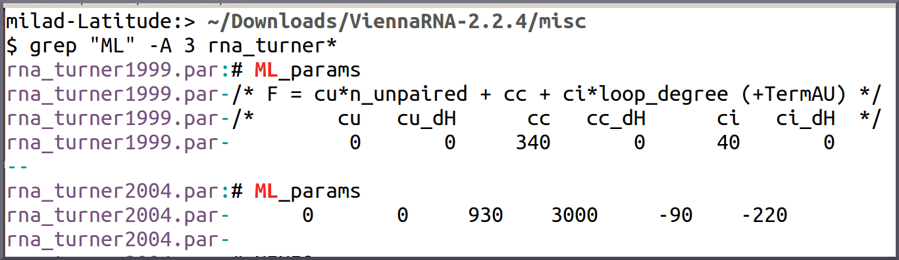

name: inverse layout: true class: center, middle, inverse --- --- layout: false .center[ ## Established RNA Energy Models ### and ## The Curse of Locality # # # <br><br><br> #### Milad Miladi #### University of Freiburg <br> #### Bled, February 2017 ] --- ### .center[RNA of interest] - A randomly selected member of tRNA family - And the classic cloverleaf secondary structure   --- ### .center[Test 1: Extension] - Di-Nucleotide shuffled genomic context - tRNA position: - close to the center of the extension - according to a normal distribution - Target: a base-pair from *the acceptor stem* .center[] --- .center[Split example]  --- ### .center[Probability of the selected base-pair (global folding)] - Context-length: - Total length of the left and right extensions - Each time the context is re-shuffled and re-sampled   --- ### .center[Test 2: Split] .center[] <!--  --> --- ### .center[Probability of the selected base-pair (by global folding)] - Each time the context is re-shuffled and re-sampled   <!--   --> --- ### .center[Challenges] * **Locality**: *(extend test)* - Desired base-pair probabilities easily distorted - Specially for the closing stems of multi-loops .right[] * **Anti-locality**: *(split)* - No matter how long a sequence is .. - No matter what is inside .. - Few distant compatible base-pairs make an strong prediction! .right[] --- .center[Quake example]  --- #### .center[Extend: Turner vs Quake]    --- ### .center[What is Quake?] - RNAfold uses the famous Turner's energy parameters for free energy computations - It is a new parameter set ```bash RNAfold -p -P src/misc/quake.par ``` - Not really! - It is Turner's params except one param: - Unpaired nucleotide penalty of a multiloop region --- ### .center[Turner vs Quake] - Turner:  - Quake: ```bash /* F = cu*n_unpaired + cc + ci*loop_degree (+TermAU) */ /* cu cu_dH cc cc_dH ci ci_dH */ 50 0 930 3000 -190 -220 ``` --- #### .center[CisReg dataset, Asymmetric Context 200] .center[Basepair accuracy (=expected sensitivity)]  <!-- --- #### .center[Localfold CisReg dataset] .left[Basepair accuracy (=expected sensitivity)]  --> --- #### .center[ CisReg dataset, Asymmetric Context 200] .center[Basepair accuracy (=expected sensitivity)]  --- #### .center[ CisReg dataset, Asymmetric Context 200] .center[Basepair accuracy (=expected sensitivity)]  --- #### .center[ CisReg dataset, Asymmetric Context 200] .center[Basepair accuracy (=expected sensitivity)]  --- #### .center[Localfold CisReg dataset] .center[Basepair accuracy (=expected sensitivity)]  --- ### .center[What is missing?] * Well the established energy models highly overfitted to positive set of RNA strands, with nice boundaries * For multiloop parameters (at least) * More precisely the dynamic programming variation of Turner model is over-fitted --- layout: false .center[ .gray[####Acknowledgment: * Rolf * Martin ] #Thank you ] --- --- layout: false ### .center[mmfold inside algorithm] - Calculating the base-pair probabilities with an inside algorithm 1. Base case: P_Hairpin(a) 2. Inner Loop: P(a| a is closing b ) 3. Multiloop: P(a| a is closing multiloop b1, b2, ... )    --- ### .center[mmfold implementation] - Implemented in C with fun and pain! :D - Directly inside cloned Vienna RNA package ```cpp PUBLIC void mm_pf_create_bppm( vrna_fold_compound_t *vc, char *structure){ ... probs[ij] = mc_probs[ij]/ qb[ij] * exp_E_Hairpin(j-i-1, type, S1[i+1], S1[j-1], sequence+i-1 ,pf_params) * scale[j-i+1]; // TODO: Verify rescaling is correct! ... FLT_OR_DBL new_score = probs[ij] * (mc_probs[kl]/mc_probs[ij]) * (qb[ij]/qb[kl]) * (scale[u1 + u2 + 2] * exp_E_IntLoop(u1, u2, type, type_2_r, S1[k+1], S1[l-1], * S1[i-1], S1[j+1], pf_params)); ... tmp = qq1; qq1 =qq; qq =tmp; tmp = qqm1; qqm1=qqm; qqm=tmp; } ```